after doing the relevant reading for this lecture, listening to the
lecture, and attending the relevant tutorial, you will be able to:
explain what it is for a GPLI tree to be finished and a path to be
saturated
construct GPLI trees
read models off open paths of GPLI trees
required reading
section 13.7 of chapter 13
tree rules for gpli
tree rules for gpli
as in the transition from MPL to GPL we will build on our
pre-existing tree rules
since
is part of the logical vocabulary, we need to say something about the
tree rules for it
the closure rule
the first new rule is called the closure rule
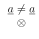
this basically says that you can close a path if there is a
proposition on it which asserts that something is not identical to
itself!
the motivation for this rule should be obvious
new notation explained
recall that
stands for any arbitrary wff that has no free variables other than
and that
stands for the wff that results from
by replacing all free occurrences of
in
with the name
we use
to stand for any arbitrary wff in which the name
occurs (one or more times)
we then use
to stand for any wff which results from
by replacing some occurrences of
with the name
some examples using the new notation
if
is
,
then
is
and
is
if
is
,
then
is
and
is
if
is
,
then
is
or
or
if
is
,
then
is
or
or
substitution of identicals
the second new rule is called the substitution of
identicals rule
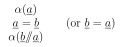
let’s run through an example . . .
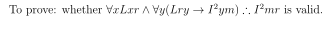
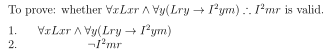
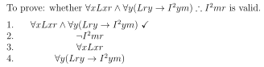
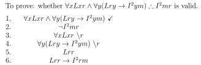
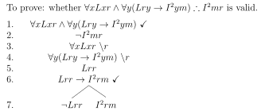
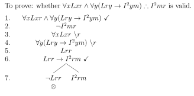
wrong!
why? neither the closure rule nor the ordinary rule for closing a
path applies here
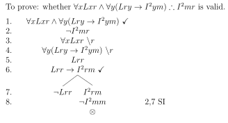
right!
finished trees, closed and saturated paths
finished trees, closed and saturated paths
a tree is finished when all paths are closed or saturated
a tree is saturated when no more rules can be applied to it
recall the qualification for the rule for the universal
quantifier
we add the following qualification for saturation
saturation
saturation: a path is not saturated unless every
application of SI that could be made on that path and that would result
in the addition to the path of a formula that does not already appear on
the path has been made
let’s consider another example . . .
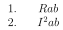
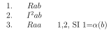
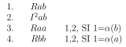
this tree is finished, as we cannot apply the SI rule to generate
any new basic propositions (or negations of basic propositions)
reading models off open paths
reading models off open paths
given a saturated open path, we can read off from it a model on
which the proposition(s) at the top of the tree are true
the process involves three stages
stage one: construct a provisional domain and assignment of
referents to names
stage two: trim the domain and assignments of referents to names to
obtain a final domain and assignment of referents to names
stage three: assign extensions to predicates on the trimmed domain
and assignments of referents
let’s consider an example . . .
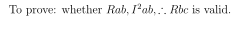
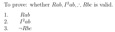
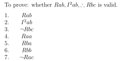
domain:
referents:
extensions:
domain: {1, 2, 3} (provisional)
referents:
:1,
:2,
:
3 (provisional)
extensions:
domain: {1, 2, 3} (provisional)
referents:
:1,
:2,
:
3 (provisional)
extensions:
domain: {1, 2, 3} (provisional)
referents:
:1,
:1,
:
3 (revised)
extensions:
domain: {1, 2} (revised)
referents:
:1,
:1,
:
2 (revised)
extensions:
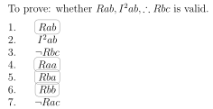
domain: {1, 2} (revised)
referents:
:1,
:1,
:
2 (revised)
extensions:
:
let’s consider another example . . .
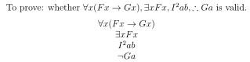
domain:
referents:
extensions:
domain: {1, 2, 3}
referents:
:
1,
:2,
:3
extensions:
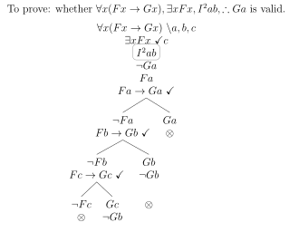
domain: {1, 2}
referents:
:
1,
:1,
:2
extensions:
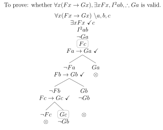
domain: {1, 2}
referents:
:
1,
:1,
:2
extensions:
wrapping up
this lecture
trees for GPLI
two new tree rules
the closure rule
substitution of identicals
finished trees and saturated paths
new definition of saturation
reading models off open paths
provisional domains and assignments of referents
trimming domains and assignments of referents
live lecture and tutorials
you will practice constructing GPLI trees on your own
next lecture
lecture 23, numerical quantifiers and definite descriptions in
GPLI